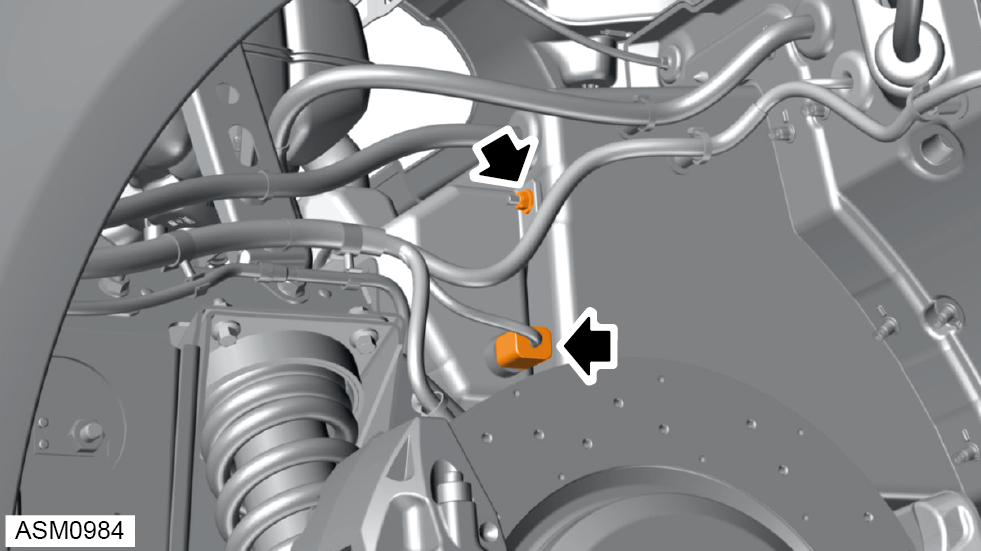
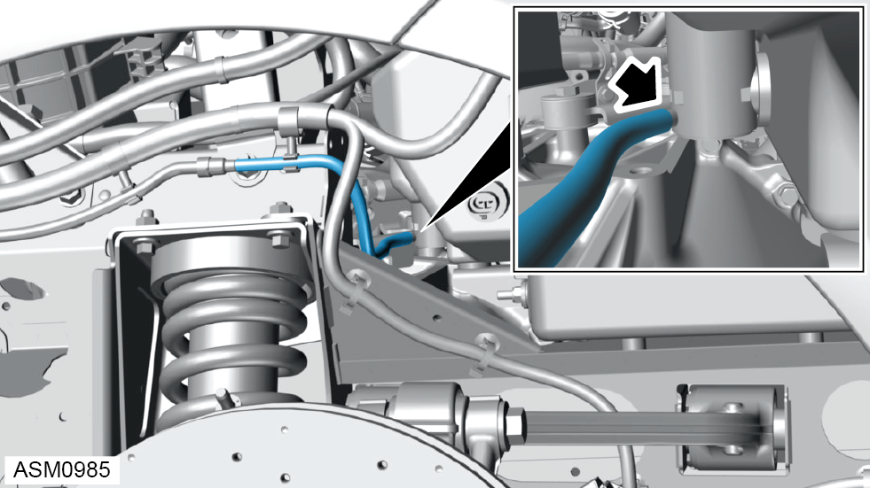
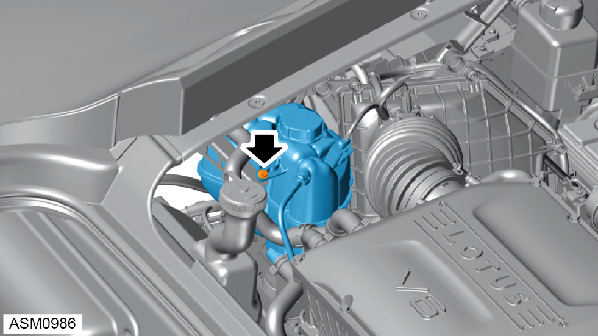
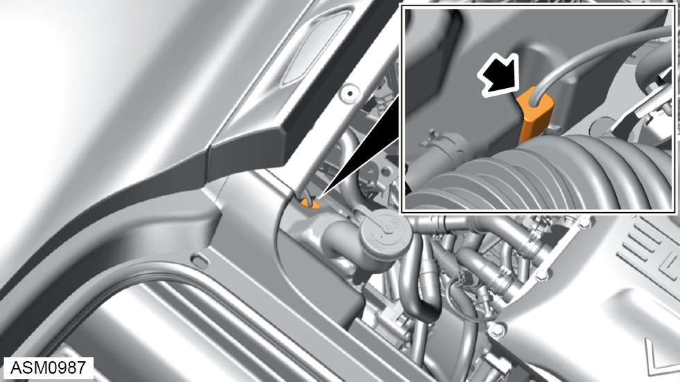
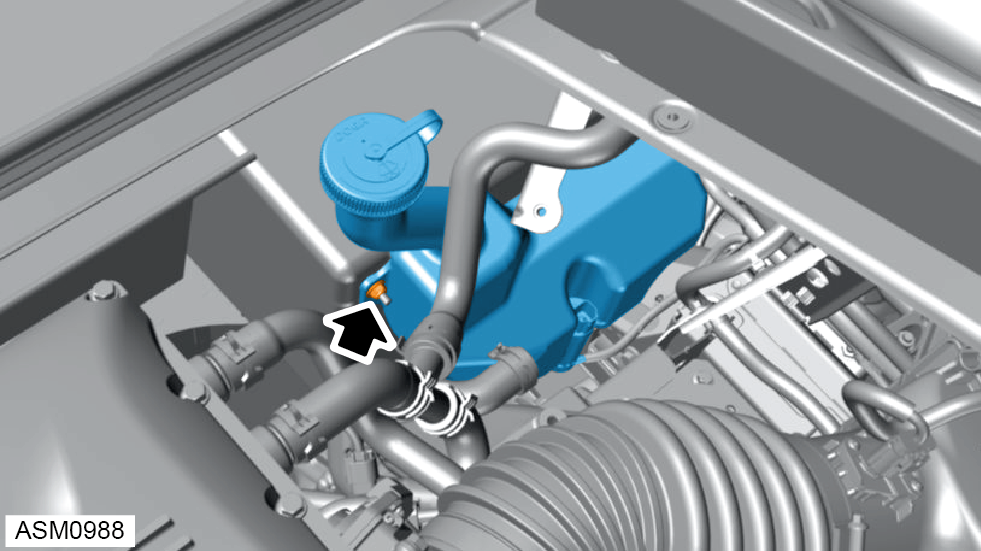
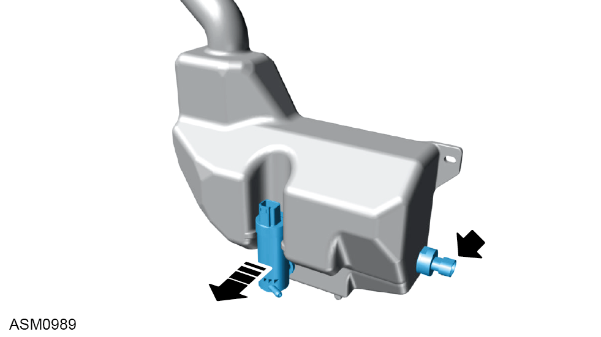

Washer Bottle Assembly
Print
Operation Code: 17.21.05-02
Removal
- Remove rear wheel arch liner left side. Refer to procedure.

- Disconnect harness connector from washer bottle level sensor.
- Remove M6 nyloc nut and washer securing washer bottle to vehicle. Torque 6 Nm.
NOTE: Always record quantity and
fitted position of washers.

- Remove hose from washer pump.
- Remove rear engine bay trim cover. Refer to procedure.

- Remove M6x16 bolt securing coolant expansion tank to upper mounting bracket. Torque 8 Nm.
- Release coolant reservoir and set aside to access connector.

- Disconnect harness connector from washer bottle pump.

- Remove M6 nyloc nut and washer securing washer bottle to vehicle. Torque 6 Nm.
NOTE: Always record quantity and fitted position of washers.
- Remove washer bottle.
Do not carry out further disassembly if removing for access only.

- Remove washer bottle level sensor.
- Disengage washer bottle pump from washer bottle.
- Remove washer pump.
Installation
- Installation is the reverse of removal procedure.